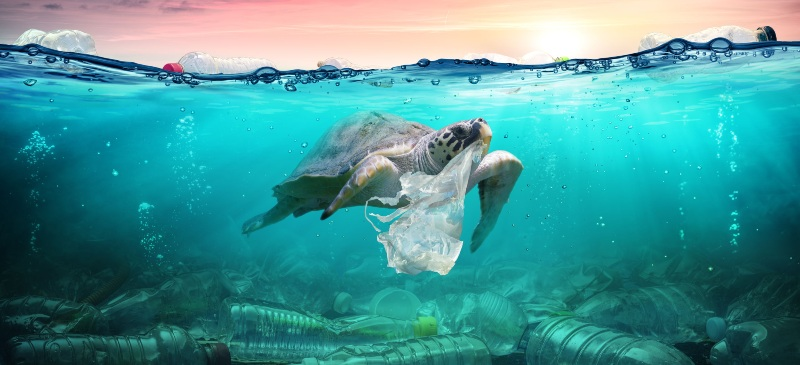

Introdução
O plástico é um material amplamente utilizado no nosso dia a dia, mas sua durabilidade e baixa taxa de decomposição fazem com que ele se acumule nos oceanos, causando danos irreversíveis à vida marinha e aos ecossistemas aquáticos.
A cada ano, milhões de toneladas de plásticos são despejadas no mar, afetando animais marinhos e até mesmo seres humanos. A poluição por plásticos é uma das maiores ameaças ambientais atuais, exigindo ações urgentes para reduzir e eliminar esse problema.
Este site tem como objetivo conscientizar sobre a gravidade da poluição marinha por plásticos e propor soluções para mitigar esse problema.